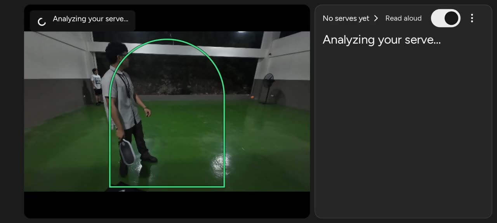

One cue you can read from the baseline
After each serve the app gives one instruction in large type, then three measurements. The previous result stays on screen, dimmed, while the next serve is analyzed.
Below 60% confidence the serve type reads "Not sure" and only general mechanics cues appear, labeled as such.
